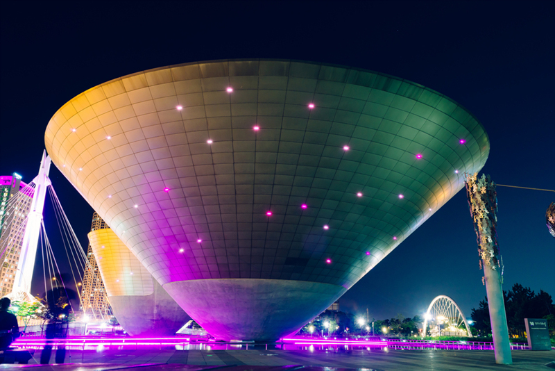

Address : 250, Incheon tower-daero, Yeonsu-gu, Incheon
Type : Architectural & Sculptural Highlights
Inquiries : 1330 Travel Hotline: +82-2-1330 (Korean, English, Japanese, Chinese)
Homepage : www.tribowl.kr (Korean, English)
Famous for its impressive night views of Songdo, Tri-Bowl is a multi-complex culture and arts center built to seem as if it is floating on water. Its unique architecture of three bowl-shaped buildings floating on water symolizes Incheon, a city in harmony with the sky, ocean, and earth.